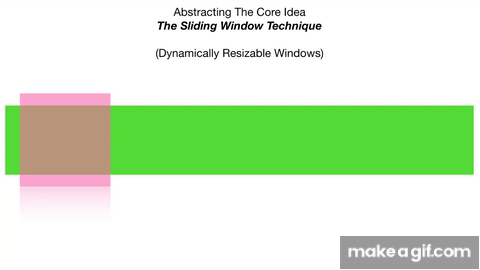

4.3trending topic detection
trending topics cab be detected by using a sliding window with variable window size(like for day,week,year)and using hash map to count the number hash tags used within the particualar time slot can be usefull

code1
MinHash is utilized to compare user sets (like artist listeners) efficiently, estimating Jaccard similarity. This speeds up the trend detection
 code2
code2
Performance analysis
Minhash :Time Complexity:O(K*N) for creating signatures and O(k) for estimationf similarity
Space Complexity:O(K) for storing signatures
Sliding window Time complexity:O(n)
space complexity:O(n)